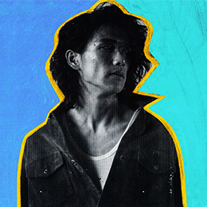

<div id="modal" class="profile">
  <div class="modal-page">
    <ul>
      <li>
        <p class="airtist">
          
          <span>ササノマリイ</span>
        </p>
        <div class="text">
          耳に残るメロディラインと融合された深度のあるサウンドデザインが特徴的なビートメイカー / プロデューサー / シンガー。Lo-fi HIP HOP 等の影響もうけ SP404 を使ったビートライブ、DJ などクラブシーンでも活動中。2017 年 には映画「3 月のライオン」の主題歌になった「ぼくのりりっくのぼうよみ」の「Be Noble」のサウンドプロデュー スをするなど、プロデューサーとしても多くのアーティストの作品に参加。<br>
          た、過去の映像作品が動画サイト vimeo の staff picks、アヌシー国際アニメーション 映画祭 2016 委託作品部門 ( フランス )、Anifilm( チェコ )、 Golden Kuker-Sofia( ブルガリア ) など数々の映像、アニメーション festival にて入賞するなど、音楽のみならずアー ト方面での注目度も高い。
        </div>
      </li>
    </ul>
  </div>
</div>